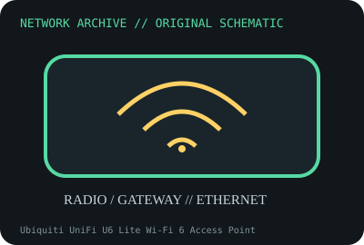

[ MODEL-SPECIFIC NETWORK HARDWARE ]
Ubiquiti UniFi U6 Lite Wi-Fi 6 Access Point
Dual-band Wi-Fi 6 ceiling/wall AP with Gigabit Ethernet and PoE input. Confirm exact product label and revision before applying specifications.

IDENTIFICATION: Confirm manufacturer PID, hardware revision, device ID or module suffix. Nominal standards/link rates are not measurements of payload performance.
Exact specifications and compatibility
| Dedicated subcategory | Network appliances: routers, access points & switches |
|---|---|
| Exact product/model | Ubiquiti UniFi U6 Lite Wi-Fi 6 Access Point |
| Bus, ports and physical interface | One 10/100/1000BASE-T RJ-45 port; PoE input per Ubiquiti model specification; internal antenna array. |
| PHY, radio or protocol | 802.11ax radios with 2x2 spatial streams on 2.4GHz and 5GHz; supported PHY modes and channel widths are client/regulatory dependent. |
| Nominal rate (not measured) | Advertised band rates are PHY maxima, not a single-client throughput. Gigabit Ethernet port is nominally 1Gb/s. |
| Measured throughput | No measured benchmark is claimed for a physical specimen. A valid result must record host/peer, link partner, media/cable, driver/firmware, traffic pattern, test tool and duration. |
| Drivers, OS and firmware | UniFi Network application and Ubiquiti firmware; check minimum controller and release support. |
| Compatibility | Requires compatible PoE source and UniFi controller adoption; verify whether package includes injector and regional Wi-Fi channel rules. |
| Variant warning | U6 Lite differs from U6+, U6 Pro and UAP-AC-Lite; port, radio, PoE and firmware features differ by model. Check exact label. |
Model and revision notes
U6 Lite differs from U6+, U6 Pro and UAP-AC-Lite; port, radio, PoE and firmware features differ by model. Check exact label.
UniFi Network application and Ubiquiti firmware; check minimum controller and release support.
Requires compatible PoE source and UniFi controller adoption; verify whether package includes injector and regional Wi-Fi channel rules.
Archival, ESD and preservation notes
Record MAC, serial, hardware revision, power source, firmware and adoption state; depower before handling and store in ESD-safe packaging.
Document source URL, access date, document revision and specimen label/condition. Preserve without credentials or private configuration.
Primary manufacturer and standards sources
- Ubiquiti U6 Lite technical specificationsPrimary manufacturer or standards documentation; verify exact SKU and host revision.
- Ubiquiti UniFi product supportPrimary manufacturer or standards documentation; verify exact SKU and host revision.
- IEEE 802.11 standards working groupPrimary manufacturer or standards documentation; verify exact SKU and host revision.
Manufacturer statements cover the named part or its documented product family; the exact labeled revision and vendor compatibility list take precedence.